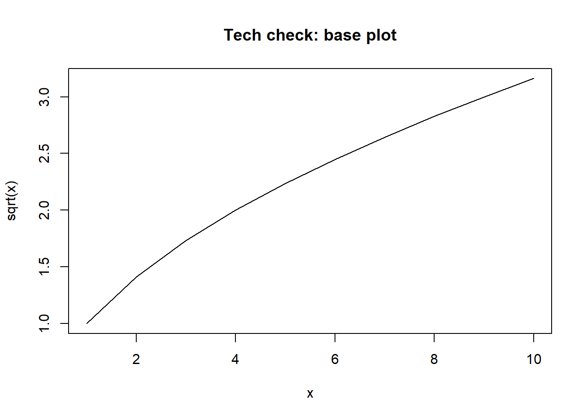
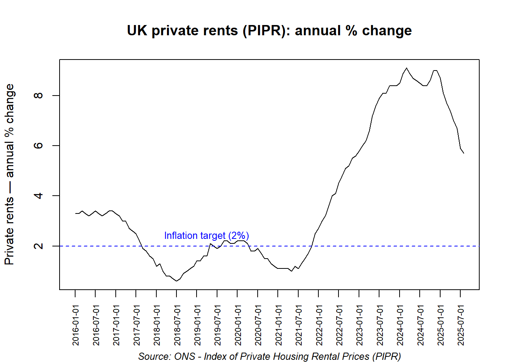
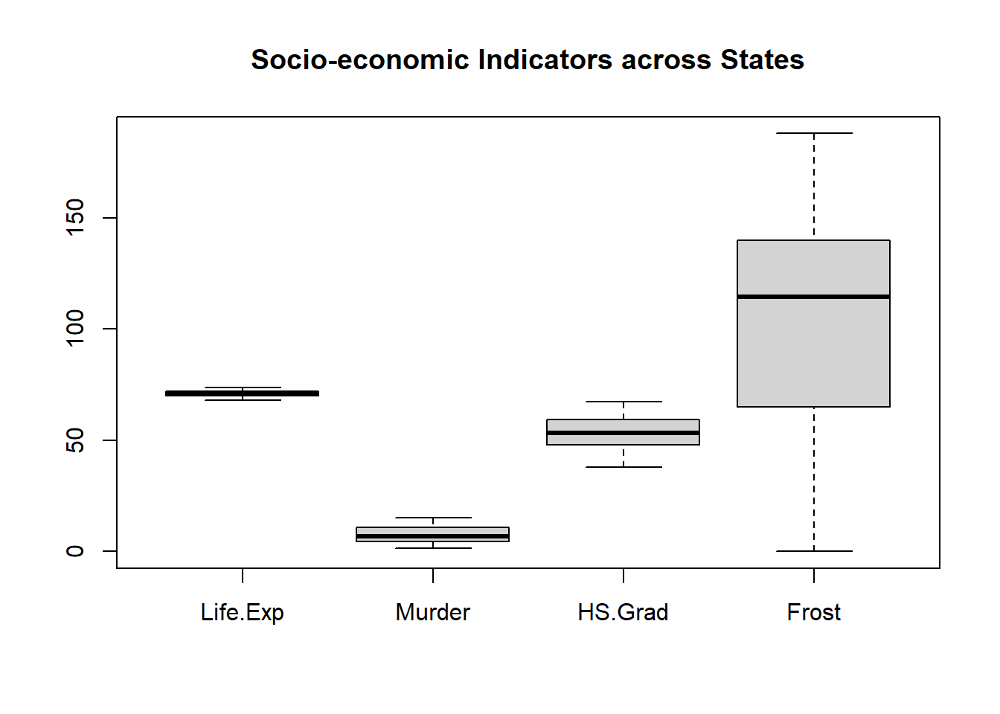

> 5*5
[1] 25Supervision 1
🧪 Lab 1 — R Quickstart
🯠Learning outcomes (you will be able to)
- Open RStudio and recognise the Console, Script, Environment/History, Files/Plots/Help panes.
- Create and run a short R script (comments, simple operations).
- Set your working directory to a course folder.
- Create and inspect basic objects (a scalar and a small matrix).
- Save your script for the next supervision.
🧰 Prerequisites
- Read “Welcome & Supervision Overview†section.
- R and RStudio installed.
- A course folder and subfolders on your machine where you will save scripts and other files:
RM01_labs/
├── data/ # For raw datasets and imports
├── scripts/ # Your R code files
├── outputs/ # Generated plots, tables, reports
├── certificates/ # Professional development documentation
└── reflections/ # Written responses to critical questions📘 Introduction to R
After downloading and installing open RStudio, we will cover now some tutorials.
👨‍💻 Long Tutorial
We would cover a brief introduction on this labs, students can use a longer tutorial for detailed learning at https://cran.r-project.org/doc/manuals/r-release/R-intro.pdf
A. Get oriented in RStudio
You need to have installed R and RStudio to continue with this lab.
- Open Rstudio in your computer.

- Let’s choose a better appeareance for our RStudio. Click on Tools>Global Options.

- Afterwards, in the window “Options”, click on “Appearance”, RStudio theme: “Modern”, Editor font: “Courier”, Editor theme: Cobalt. Finally, click on “Apply”

B. Your first script
- Open a file to save the code for this session. Click on File → New File → R Script; or simply press Ctrl+Shift+N (command+shift+enter in Mac); this will open a new panel called ‘Script’ where we are going to write the commands for R. Change the name of the script to “lab_1”, saving the script in the folder RM01_Labs/scripts/ File → Save As → “lab_1”

- Add a comment (starts with
#.) On the script panel, type the caracter#and then write'LAB ONE AND TODAY'S DATE'. R will ignore any line of command starting with#. You can use#to add comments, titles, reminders within your R code/ R Script.
Your R Script now shall look similar to this:

The Rstudio screen has four windows or panels: 1. Console. 2. Environment and history. 3. Files, plots, packages and help. 4. The R script(s) and data view. The R script is where you keep a record of your work or commands - in a line by line basis.
- On your script, type
getwd()in line number ‘2’ and hit the keys ‘ctrl+enter’ in your keyboard (The + indicates ‘do it at the same time’), you dont need to press the key ‘+’. After ‘running’ line 2, you will see in the console panel the working directory (or folder) that R is using to download and upload files.


C. Set your working directory
Choose your course file folder 📁. Recall we called the working folder folder ‘RM01_labs’. In RStudio’ go to ‘Session’, ‘Set Working Directory’, ‘Choose Directory’, and select this folder.

The ‘Console’ panel renders setwd(and a path/directory to your chosen folder in your computer). Copy and paste this output in line 3 from your Console to your R Script. Setting the directory with code and not ‘clicks’ will save you time.


So far, we have created the following script:
# LAB ONE 25/09/2025
getwd()
setwd("C:/Users/YOUR DIRECTORY/RM01_labs")and this is the Console output:
> # LAB ONE 25/09/2025
> getwd()
[1] "C:/Users/YOUR DIRECTORY/Documents"
> setwd("C:/Users/YOUT DIRECTORY/RM01_labs")D. First calculations & a matrix (3–4 min)
- In your script, run:
5 * 5(result should be25in the Console).
Create a small matrix and run it. Use the following code, explanatory comments are written with #:
# A is an object, # <- is similar to equal # 1:8 are the numbers from 1 to 8 # nrow is the matrix number of rows = 4 # ncol is the matrix number of columns = 2 A <- matrix(1:8, nrow = 4, ncol = 2) # The object A now has a matrix. Run the object A AThe outcome in the console shall be as follows:
> # A is an object,
> # <- is similar to equal
> # 1:8 are the numbers from 1 to 8
> # nrow is the matrix number of rows = 4
> # ncol is the matrix number of columns = 2
> A <- matrix(1:8, nrow = 4, ncol = 2)
> # The object A now has a matrix. Run the object A
> A
[,1] [,2]
[1,] 1 5
[2,] 2 6
[3,] 3 7
[4,] 4 8- In brief, you created a matrix called ‘A’, with numbers from 1 to 8, with four rows and two columns.
E. Inspect objects & view data
- Check the Environment tab to see objects you’ve created.
- The tab History shows a list of commands used do far.

- To see the matrix A in a new window, type the command
View(A)in your script and hit the keys ‘ctrl+enter’ to run that line , this will send you to a different tab. Afterwards, click on your R script to come back.
# LAB ONE 25/09/2025
getwd()
setwd("C:/Users/Cam/OneDrive - University of Cambridge/Cambridge 2025-26/RM01_labs")
5*5
# A is an object,
# <- is similar to equal
# 1:8 are the numbers from 1 to 8
# nrow is the matrix number of rows = 4
# ncol is the matrix number of columns = 2
A <- matrix(1:8, nrow = 4, ncol = 2)
# The object A now has a matrix. Run the object A
A
View(A)F. (Optional) Install and load a package
The tab ‘Packages’ shows the list of add-ons included in the installation of RStudio. Click on the tab ‘Packages’, if you check a box next to a package, that package is loaded into R, if not, any command related to that package won’t work, you will need select it. You can also install other add-ons by clicking on the ‘Install’ icon.
Another way to install add-ons is to type the function install.packages("name of the package"), and then you will be able to open the library of commands of that package.
- In line 8, to install the package forecast, type
install.packages(“forecast”)and hit ctrl+enter. If a window opens, you can hit yes to restart RStudio. See the picture below, make sure you do not get errors in the console. The sign ‘>’ will show when R finishes running a line.
# the function to install packages in R
# we use "forecast" as example
install.packages("forecast") # to install the package
library(forecast) # to activate the package 'forecast'Remember to activate the package by typing ‘library(the package)’, for example, library(forecast) and ctrl+enter. This will activate all functions within the ‘forecast’ package.
Make sure there are no error messages in the installation, and if so, make sure to solve the issue before continuing.
The package forecast is used to analyse and predict time series (e.g. yearly house prices during the last 20 years).
Script/Data View Window:
• Begin scripts with a comment for title and description using the hash character (#). Anything after the hash on the same line is considered a comment and is ignored by R. • Code can continue to the next line without a special character, but only if the previous line ends in a way that suggests continuation (e.g., a comma or unclosed brackets). • To run a line of code, position the cursor on the line and press Ctrl+Enter. For multiple lines, select them and press Ctrl+Enter.
Console/Output Window:
• It’s recommended to work in script mode for reusability. • Commands outside the script context can be typed at the bottom of the console, indicated by the “>†sign. • Press Enter to execute a command. • Use the up and down arrows to revisit and edit older lines of code previously typed into the console.
💾 Save your script
File → Save (e.g., lab_1) into your ‘script’ folder. Remember to save your R Scripts after each supervision, this will save you a lot time!
✅ Check‑off
🏁 End of Lab 1 🛑 Remember to save your script 💾
🧪 Lab 2 — Professional Development: R Certification via LinkedIn Learning
Professional certifications complement academic learning by providing industry-recognised credentials. For land economy graduates leading industries and entering consultancy, government, or research roles, demonstrating quantitative competency through multiple channels strengthens your professional profile and evidences commitment to continuous learning.
Learning outcomes
By the end of this lab you will be able to:
- Access institutional resources / LinkedIn Learning for continuous professional development
- Complete a certified R programming course that demonstrates foundational competency
- Document your learning through professional certification pathways
- Prepare your technical environment for advanced coursework
- Reflect critically on skill acquisition in academic and professional contexts
Prerequisites
- University credentials for LinkedIn Learning access.
- R and RStudio installed (you’ll run a small code check).
🧪 Part A — First‑time access to LinkedIn Learning (20 minutes)
Establish access to University-provided LinkedIn Learning resources.
- Follow the UIS guidance: help.uis.cam.ac.uk/service/support/training/linkedin-learning-info (opens the official instructions).

- Choose Login with your University account (SSO). If prompted, connect to an existing LinkedIn profile (optional, but helpful for saving certificates).
🧪 Part B — Course Selection and Academic Alignment
- In LinkedIn Learning, search for “R Programming†or “R for Data Analysis”.
- Pick a Beginner course or a Learning Path that issues a certificate upon completion.
- Skim the syllabus; confirm it covers: R basics (e.g. objects, vectors), data frames, importing data, and simple plots.
Short beginner certificates often take only a few hours. Pick one you can finish this week.
💠Reflect: a) Provide a certificate/enrolment URL or a screenshot proving enrolment. What challenges do you anticipate in acquiring programming skills alongside your substantive coursework? b) List three new R commands and three packages you learned and one common error you corrected.
🧪 Part C — Add to your LinkedIn profile (optional but recommended)
- Open your LinkedIn profile → Add profile section → Recommended → Licenses & Certifications.
- Name: Course title. Issuing organization: LinkedIn Learning. Credential URL: paste the certificate share link (if available).
- Save.
🧪 Part D — RStudio tech‑check for upcoming labs
Run the following lines in RStudio to ensure you’re ready for the following Labs.
Recall you can run lines of code in R by hitting the keys ctrl+enter (commad+enter for Mac)
R.version.string[1] "R version 4.4.2 (2024-10-31 ucrt)"sessionInfo()$running[1] "Windows 10 x64 (build 19045)"Install key packages (run once):
# install all packages at once
install.packages(c("learnr", "r4ds.tutorials", "readr", "readxl", "ggplot2"))Verify they load and basic plotting works:
# Create a small data frame with x = 1,...,10 and y = sqrt(x).
# We'll use this to do a quick "tech check" with a base R plot.
df <- data.frame(x = 1:10, y = (1:10)^0.5)
# Base R line plot:
# - type = "l" draws a line (instead of points).
# - main/xlab/ylab set the title and axis labels.
# This confirms base graphics are working and shows a concave curve of sqrt(x).
plot(df$x, df$y, type = "l",
main = "Tech check: base plot",
xlab = "x",
ylab = "sqrt(x)")
# -----------------------------------------------
# Test basic plotting capability with ggplot2
# -----------------------------------------------
# Load ggplot2 (grammar of graphics) for layered, customizable plots.
library(ggplot2)
# Create a toy dataset: yearly "average house prices" (hypothetical numbers).
# This lets us test lines, points, labels, and themes in ggplot2.
test_data <- data.frame(
year = 2010:2020,
house_prices = c(250000, 260000, 275000, 285000, 290000,
310000, 325000, 340000, 355000, 370000, 385000)
)
# Start a ggplot:
# - aes(x = year, y = house_prices) maps variables to axes.
# - geom_line() draws the trend line; linewidth controls thickness.
# - geom_point() adds markers at each year.
# - scale_y_continuous(labels = scales::comma_format()) formats y-axis with commas (e.g., 310,000).
# - labs() sets a clear title, subtitle, axis labels, and a caption.
# - theme_minimal() gives a clean, publication-style look.
ggplot(test_data, aes(x = year, y = house_prices)) +
geom_line(colour = "steelblue", linewidth = 1.2) + # trend line
geom_point(colour = "darkred", size = 2) + # points on each year
scale_y_continuous(labels = scales::comma_format()) +# pretty y-axis labels
labs(
title = "Hypothetical House Price Trends", # main title
subtitle = "System functionality test", # context/subtitle
x = "Year", # x-axis label
y = "Average House Price (£)", # y-axis label
caption = "Test data for R/RStudio verification" # caption under the plot
) +
theme_minimal() # clean theme
💠Reflect: Did everything install and run without warnings? Capture any errors so we can fix them in class.
Best practices
- Practice while you watch—replicate examples in RStudio, don’t just read the labs and watch videos.
- Keep a snippets file (your personal cheat‑sheet) with commands you’ll reuse.
- Store all artifacts (notes, PDFs) in your course project folder for quick reference.
🏁 End of Lab 2 🛑 Remember to save your script 💾
🧪 Lab 3 — Interactive R Learning: Building Programming Competency
Learning outcomes
This lab exposes you to different pedagogical approaches in quantitative methods education while building the practical skills necessary for data-driven research in land economy.
By the end of this lab you will be able to:
- Navigate multiple R learning platforms with different pedagogical approaches
- Complete structured programming exercises with immediate feedback
- Develop troubleshooting skills through guided problem-solving
- Acquire multiple ways of self-development for your own study plan.
Prerequisites
- R (≥ 4.1) and RStudio.
- Packages (install once):
install.packages(c("learnr", "r4ds.tutorials", "swirl"))If tutorials don’t appear in RStudio’s Tutorial tab after installation, restart R.
Part A — r4ds.tutorials: 01-data-visualization
This runs as an interactive tutorial in RStudio’s Tutorial pane.
# Option 1: via code
learnr::run_tutorial("01-data-visualization", package = "r4ds.tutorials")
# Option 2: discover tutorials installed on your system
learnr::available_tutorials("r4ds.tutorials")Do this: 1. Start and complete the tutorial on data visualization. Use the Show in New Window icon if the pane is small. 2. When you reach the Submit page, follow its instructions and save the html (we won’t collect submissions in this lab, just finish to the end).
💠Reflect: - What topic would benefit from additional practice or explanation? e.g. aesthetics (e.g., aes(x, y, color)) and geoms (e.g., geom_point(), geom_line())
Part B — learnr: ex-data-basics
This is a short core tutorial bundled with learnr.
# open interactive tutorial in the package 'learnr'
learnr::run_tutorial("ex-data-basics", package = "learnr")
# Explore other tutorials
learnr::run_tutorial(, package = "learnr")Do this: Complete all exercises for the tutorial ‘ex-data-basics’..
💠Reflect: - What is the difference between a tibble and a data frame? - Why might tibbles be preferred in modern R workflows?
Part C — swirl (console‑based)
swirl runs entirely in the Console and saves your progress.
# Install/run swirl
install.packages("swirl")
library(swirl)
# Start swirl
swirl()
# (enter your name when prompted)
# Install and start a course (first time only)
install_from_swirl("R Programming") # or "R_Programming"
# At any time, leave swirl with
# bye()
# Check progress later
swirl::progress()Do this: - Install R Programming and complete the first lesson. - Exit with bye() and verify progress with swirl::progress().
💠Reflect: - How does working in the Console (swirl) feel compared with the GUI tutorials?
Part D — Mini practice
Create a tiny vector and compute a statistic, then plot a quick line:
# create variable x
x <- 1:10
#calculate the mean and asign it to mean_x
mean_x <- mean(x)
# review mean_x
mean_x[1] 5.5# quick plotting function
plot(x, type = "l", main = "Quick line", ylab = "x")
# abline adds horizontal (h) or vertical (v) lines.
abline(h = mean_x, lty = 2)
💠Reflect: - Which approach (r4ds.tutorials, learnr, swirl) best prepared you to learn R coding independently?
Best practices
- Use learnr/r4ds.tutorials for guided practice with hints, auto‑checks, and saved state.
- Use swirl when you prefer keyboard‑only Console practice or have limited UI.
- Restart RStudio if tutorials don’t show; list what’s available with
learnr::available_tutorials(). - Keep your scripts open alongside tutorials to copy refined solutions into your own notes.
🏁 End of Lab 3 🛑 Remember to save your script 💾
🧪 Lab 4 — Uploading Excel & CSV Files to R (PIPR)
Learning outcomes
By the end of this lab you will be able to: 1. Download the Private rents annual inflation to August 2024 monthly workbook and save it in a tidy project structure. 2. Import Excel (.xlsx/.xls) and CSV files using RStudio’s Import Dataset UI and reproducible R code. 3. Deal with metadata/header rows via skip, set col_names, and verify column types. 4. Plot time series (index and annual % change) with base R and add reference lines. 5. Use help pages (e.g., ?plot) and annotate charts for a policy audience.
Prerequisites
- R (≥ 4.0) and RStudio.
- Project folder (e.g.,
RM01_labs/) with subfolderdata/. - Packages (install once):
# Make sure to install the packages.
# install.packages(c("readxl", "readr"))💡 Tip: Prefer file names without spaces and lower-cases, e.g.
pipr_monthly.xlsrather thanpipr monthly.xls.
Part A — Get PIPR monthly from ONS (manual steps)
- Go to ONS.gov.uk and search Private rents annual inflation, UK countries, January 2016 to August 2024. This lab is using ONS data on Figure 4: Rent annual inflation slowed across the UK, Private rents annual inflation, across the UK, January 2016 to August 2025.


- On the dataset page, choose Data → Download monthly workbook. Save the file as Excel and CSV Comma delimited.
- Save as
data/pipr_monthly.xlsinside your project folder (e.g.,RM01_labs/) with subfolderdata/. - (Optional) Open the file and identify the sheet that contains the UK and country/regions.
💠Reflect: Why does PIPR (rents) provide a more direct lens on housing affordability and regional pressures than GDP for planning and regeneration?
Part B — Import Excel via code (reproducible)
Use readxl::read_excel() and inspect column names to choose the UK series.
library(readxl)Warning: package 'readxl' was built under R version 4.4.3# Adjust 'sheet' and 'skip' depending on the workbook structure you download.
# we use skip = 7 because there are headings in the first 7 rows of the dataset.
pipr_raw <- read_excel("data/pipr_monthly.xls", sheet = 1, skip = 7)
# Inspect names to locate the date/month, UK Index, and UK annual % change columns
names(pipr_raw)[1] "Date" "UK" "England" "Wales"
[5] "Scotland" "Northern Ireland"# A good practice is to keep a copy of the raw data and create a new version of the data for manipulation.
pipr<-pipr_raw
# rename column names for easiness.
names(pipr) <- c("month", "uk", "england", "wales", "scotland", "n_ireland")
str(pipr)tibble [116 × 6] (S3: tbl_df/tbl/data.frame)
$ month : POSIXct[1:116], format: "2016-01-01" "2016-02-01" ...
$ uk : num [1:116] 3.3 3.3 3.4 3.3 3.2 3.3 3.4 3.3 3.2 3.3 ...
$ england : num [1:116] 3.5 3.5 3.6 3.5 3.3 3.5 3.7 3.6 3.5 3.6 ...
$ wales : num [1:116] 1.2 0.8 0.8 0.6 0.4 0.3 0.3 0.9 1.4 1.3 ...
$ scotland : num [1:116] 2.1 1.8 1.6 1.5 1.4 1.1 1.2 0.9 1.1 1.1 ...
$ n_ireland: num [1:116] 1.1 1.3 1.4 1.6 1.6 1.6 1.5 1.5 1 0.9 ...head(pipr, 6)# A tibble: 6 × 6
month uk england wales scotland n_ireland
<dttm> <dbl> <dbl> <dbl> <dbl> <dbl>
1 2016-01-01 00:00:00 3.3 3.5 1.2 2.1 1.1
2 2016-02-01 00:00:00 3.3 3.5 0.8 1.8 1.3
3 2016-03-01 00:00:00 3.4 3.6 0.8 1.6 1.4
4 2016-04-01 00:00:00 3.3 3.5 0.6 1.5 1.6
5 2016-05-01 00:00:00 3.2 3.3 0.4 1.4 1.6
6 2016-06-01 00:00:00 3.3 3.5 0.3 1.1 1.6Part C — Import via RStudio UI (reference)
- Go to RStudio → Import Dataset → From Excel → select
data/pipr_monthly.xls.

- Choose the relevant sheet and, if needed, set Skip for metadata rows (recall we used skip = 7 in Part B).

- Set Name to
pipr_monthlyand verify column names (e.g.,month,uk_index,uk_yoy). - Click Copy to grab the generated R code, then Import.
Paste the generated code in your R script so your workflow is reproducible.
Part D — Basic time‑series line plot (annual % change)
The following code plots PIPR annual % change for the UK as a line. Label the x‑axis sparsely to keep it readable.
# Create a line plot of UK private rent annual % changes
plot(pipr$uk, type = "l", # type = "l" means line plot
xlab = "", # empty x-axis label (we'll customize it below)
ylab = "Private rents — annual % change", # y-axis label
main = "UK private rents (PIPR): annual % change", # chart title
xaxt = "n") # suppress default x-axis (we'll add custom labels)
# Add sparse x-axis labels (every 6th data point to avoid overcrowding)
labs_every <- 6 # show a label every 6 months
at_idx <- seq(1, nrow(pipr), by = labs_every) # create sequence of index positions
axis(1, # 1 means x-axis (bottom)
at = at_idx, # positions where labels appear
labels = pipr$month[at_idx], # the actual month labels
las = 2, # rotate labels perpendicular to axis
cex.axis = 0.7) # make label font smaller (70% of default)
# Add subtitle showing data source directly under the title
title(sub = "Source: ONS - Index of Private Housing Rental Prices (PIPR)",
cex.sub = 0.8, # 80% of normal text size
font.sub = 3) # 3 means italic font
# Add horizontal reference line at 2% (Bank of England inflation target)
abline(h = 2, # horizontal line at y = 2
lty = 2, # line type 2 = dashed
col = "blue") # blue color
# Add text label for the reference line
text(x = 40, # position at start of time series
y = 2, # at the 2% level
labels = "Inflation target (2%)", # the text to display
pos = 3, # position 3 = above the point
col = "blue", # match the line color
cex = 0.8) # slightly smaller text (80% of default)
💠Reflect: Identify periods of fastest rent inflation and periods of slowdown. What macro factors might line up with these shifts?
Part E — Import PIPR as CSV (alternative)
Recall we downloaded the CSV version from the PIPR page. Import the file with readr::read_csv().
# Open the library to read csv comma delimited files.
library(readr)
# Create the object pipr_csv to store the data
pipr_csv <- read_csv("data/pipr_monthly.csv", skip =7) # adjust file nameRows: 116 Columns: 6
── Column specification ────────────────────────────────────────────────────────
Delimiter: ","
chr (1): Date
dbl (5): UK, England, Wales, Scotland, Northern Ireland
ℹ Use `spec()` to retrieve the full column specification for this data.
ℹ Specify the column types or set `show_col_types = FALSE` to quiet this message.# colums/variable names
names(pipr_csv)[1] "Date" "UK" "England" "Wales"
[5] "Scotland" "Northern Ireland"# quick overview of the data (tibble)
head(pipr_csv)# A tibble: 6 × 6
Date UK England Wales Scotland `Northern Ireland`
<chr> <dbl> <dbl> <dbl> <dbl> <dbl>
1 Jan-16 3.3 3.5 1.2 2.1 1.1
2 Feb-16 3.3 3.5 0.8 1.8 1.3
3 Mar-16 3.4 3.6 0.8 1.6 1.4
4 Apr-16 3.3 3.5 0.6 1.5 1.6
5 May-16 3.2 3.3 0.4 1.4 1.6
6 Jun-16 3.3 3.5 0.3 1.1 1.6Part G — Compare UK with a region
The workbook includes regions (England, Wales, Scotland, Northern Ireland), select one annual % change column and plot together with the UK.
plot(
pipr$uk, type = "l", lwd = 2,
xlab = "Month", ylab = "Annual % change",
main = "PIPR annual % change: UK vs UK countries to Aug 2025",
ylim = c(0,12)
)
# Use the function 'lines' to add the time series to the initial plot.
lines(pipr$england, lwd= 1, col="red")
lines(pipr$scotland, lwd= 1, col="blue")
lines(pipr$wales, lwd= 1, col="green")
lines(pipr$n_ireland, lwd= 1, col="grey")
legend(
"topleft",
legend = c("UK", "England", "Scotland", "Wales", "N. Ireland"),
col = c("black", "red", "blue", "green", "grey"),
lwd = c(2, 1, 1, 1, 1),
lty = 1,
bty = "n" # no box around legend (optional)
# inset = 0.02 # nudge inward if needed
)💠Reflect: Did the countries move broadly with the UK or diverge materially? What local factors could explain divergence?
Part H — Help pages and plotting extras
Let’s explore ?plot in the console. This will launch a help page in the help tab.
We also explore curve() and abline().
# ?plot # open during interactive session
curve(sin(x), from = 0, to = 6.28, xlab = "x", ylab = "y = sin(x)")
abline(h = 0, v = 5, lty = 2)💠Reflect: Which plot() arguments improved readability most? Explain the use of las, xaxt, lwd, and xlim.
Part I — Access the data of ‘Principles of Econometrics’
You can also explore textbook datasets with PoEdata for practice with scatter plots and abline(lm()).
#install.packages(c("remotes", "pkgbuild")) # helper packages
#pkgbuild::has_build_tools(debug = TRUE) # should say TRUE on Windows
#remotes::install_github("ccolonescu/PoEdata")
library(PoEdata)
data()
data("andy")
head(andy) sales price advert
1 73.2 5.69 1.3
2 71.8 6.49 2.9
3 62.4 5.63 0.8
4 67.4 6.22 0.7
5 89.3 5.02 1.5
6 70.3 6.41 1.3Best practices
- Reproducibility: Prefer code over manual spreadsheet edits; paste RStudio’s generated import code into your script.
- Paths & naming: Use a
data/subfolder; avoid spaces; use forward slashes. - Types & missing values: Check with
str(),summary(),anyNA(); coerce explicitly when needed. - Axis labelling: Sparse, rotated labels help on monthly series.
- Versioning: Save dated copies of raw downloads (e.g.,
pipr_monthly_2025-09-19.xlsx).
🏁 End of Lab 4
🛑 Remember to save your script 💾
🧪 Lab 5 — Data Visualisation
Adapted from: A Guide to Data Visualisation in R for Beginners
Learning outcomes
By the end of this lab you will be able to:
- Explore the
state.x77dataset in R. - Generate basic descriptive statistics.
- Create simple plots using base R graphics.
- Add labels, titles, and colours to plots.
- Compare different chart types (scatter, bar, histogram, boxplot).
- Use multi-panel displays to visualise multiple plots at once.
Prerequisites
- R (≥ 4.0) and RStudio.
- No additional packages required beyond base R (optional:
ggplot2for comparison).
Part A — Load dataset
library(datasets)
state_data <- as.data.frame(datasets::state.x77)
View(state_data)Part B — Data exploration
str(state_data)'data.frame': 50 obs. of 8 variables:
$ Population: num 3615 365 2212 2110 21198 ...
$ Income : num 3624 6315 4530 3378 5114 ...
$ Illiteracy: num 2.1 1.5 1.8 1.9 1.1 0.7 1.1 0.9 1.3 2 ...
$ Life Exp : num 69 69.3 70.5 70.7 71.7 ...
$ Murder : num 15.1 11.3 7.8 10.1 10.3 6.8 3.1 6.2 10.7 13.9 ...
$ HS Grad : num 41.3 66.7 58.1 39.9 62.6 63.9 56 54.6 52.6 40.6 ...
$ Frost : num 20 152 15 65 20 166 139 103 11 60 ...
$ Area : num 50708 566432 113417 51945 156361 ...💠Reflect: Explore possible research aims from the state.x77 dataset. What variables are present in state.x77? How many states (rows) and variables (columns) are there? Which are continuous, and which categorical (if any)?
Part C — Beginning and end of the dataset
head(state_data, 7) Population Income Illiteracy Life Exp Murder HS Grad Frost Area
Alabama 3615 3624 2.1 69.05 15.1 41.3 20 50708
Alaska 365 6315 1.5 69.31 11.3 66.7 152 566432
Arizona 2212 4530 1.8 70.55 7.8 58.1 15 113417
Arkansas 2110 3378 1.9 70.66 10.1 39.9 65 51945
California 21198 5114 1.1 71.71 10.3 62.6 20 156361
Colorado 2541 4884 0.7 72.06 6.8 63.9 166 103766
Connecticut 3100 5348 1.1 72.48 3.1 56.0 139 4862tail(state_data, 5) Population Income Illiteracy Life Exp Murder HS Grad Frost Area
Virginia 4981 4701 1.4 70.08 9.5 47.8 85 39780
Washington 3559 4864 0.6 71.72 4.3 63.5 32 66570
West Virginia 1799 3617 1.4 69.48 6.7 41.6 100 24070
Wisconsin 4589 4468 0.7 72.48 3.0 54.5 149 54464
Wyoming 376 4566 0.6 70.29 6.9 62.9 173 97203Part D — Descriptive statistics
There are several functions to obtain descriptive statistics, summary, psych, skimr, etc.
Here is an example with summary.
summary(state_data) Population Income Illiteracy Life Exp
Min. : 365 Min. :3098 Min. :0.500 Min. :67.96
1st Qu.: 1080 1st Qu.:3993 1st Qu.:0.625 1st Qu.:70.12
Median : 2838 Median :4519 Median :0.950 Median :70.67
Mean : 4246 Mean :4436 Mean :1.170 Mean :70.88
3rd Qu.: 4968 3rd Qu.:4814 3rd Qu.:1.575 3rd Qu.:71.89
Max. :21198 Max. :6315 Max. :2.800 Max. :73.60
Murder HS Grad Frost Area
Min. : 1.400 Min. :37.80 Min. : 0.00 Min. : 1049
1st Qu.: 4.350 1st Qu.:48.05 1st Qu.: 66.25 1st Qu.: 36985
Median : 6.850 Median :53.25 Median :114.50 Median : 54277
Mean : 7.378 Mean :53.11 Mean :104.46 Mean : 70736
3rd Qu.:10.675 3rd Qu.:59.15 3rd Qu.:139.75 3rd Qu.: 81163
Max. :15.100 Max. :67.30 Max. :188.00 Max. :566432 And, another example with the package psych.
#install.packages("psych") # if not already installed
library(psych)
describe(state_data) vars n mean sd median trimmed mad min
Population 1 50 4246.42 4464.49 2838.50 3384.28 2890.33 365.00
Income 2 50 4435.80 614.47 4519.00 4430.08 581.18 3098.00
Illiteracy 3 50 1.17 0.61 0.95 1.10 0.52 0.50
Life Exp 4 50 70.88 1.34 70.67 70.92 1.54 67.96
Murder 5 50 7.38 3.69 6.85 7.30 5.19 1.40
HS Grad 6 50 53.11 8.08 53.25 53.34 8.60 37.80
Frost 7 50 104.46 51.98 114.50 106.80 53.37 0.00
Area 8 50 70735.88 85327.30 54277.00 56575.72 35144.29 1049.00
max range skew kurtosis se
Population 21198.0 20833.00 1.92 3.75 631.37
Income 6315.0 3217.00 0.20 0.24 86.90
Illiteracy 2.8 2.30 0.82 -0.47 0.09
Life Exp 73.6 5.64 -0.15 -0.67 0.19
Murder 15.1 13.70 0.13 -1.21 0.52
HS Grad 67.3 29.50 -0.32 -0.88 1.14
Frost 188.0 188.00 -0.37 -0.94 7.35
Area 566432.0 565383.00 4.10 20.39 12067.10However, some users writing research might want more elaborated outputs.
library(dplyr)
library(gtsummary)
library(flextable)
# Recreate data inside this chunk (Quarto runs in a clean session)
state_data <- as.data.frame(datasets::state.x77)
state_data$region <- factor(datasets::state.region) # add stratifier
names(state_data) <- make.names(names(state_data)) # Life.Exp, HS.Grad, etc.
tbl <- state_data |>
gtsummary::tbl_summary(
by = region,
type = gtsummary::all_continuous() ~ "continuous2",
statistic = gtsummary::all_continuous() ~ c("{mean} ({sd})", "{median} [{p25}, {p75}]"),
digits = gtsummary::all_continuous() ~ 1,
missing = "ifany",
label = list(
Income ~ "Per-capita Income",
Illiteracy ~ "Illiteracy (%)",
Life.Exp ~ "Life Expectancy",
Murder ~ "Murder Rate",
HS.Grad ~ "High-School Grad (%)",
Frost ~ "Frost Days",
Area ~ "Area (sq mi)"
)
) |>
gtsummary::add_overall(last = TRUE) |>
gtsummary::add_p() |>
gtsummary::bold_labels() |>
gtsummary::modify_caption("**Table: Descriptive statistics by region**")
tbl| Characteristic | Northeast N = 9 |
South N = 16 |
North Central N = 12 |
West N = 13 |
Overall N = 50 |
p-value1 |
|---|---|---|---|---|---|---|
| Population | 0.054 | |||||
| Mean (SD) | 5,495.1 (6,079.6) | 4,208.1 (2,779.5) | 4,803.0 (3,702.8) | 2,915.3 (5,578.6) | 4,246.4 (4,464.5) | |
| Median [Q1, Q3] | 3,100.0 [931.0, 7,333.0] | 3,710.5 [2,528.0, 4,956.0] | 4,255.0 [1,912.0, 7,212.0] | 1,144.0 [746.0, 2,284.0] | 2,838.5 [1,058.0, 4,981.0] | |
| Per-capita Income | 0.019 | |||||
| Mean (SD) | 4,570.2 (559.1) | 4,011.9 (605.5) | 4,611.1 (283.1) | 4,702.6 (663.9) | 4,435.8 (614.5) | |
| Median [Q1, Q3] | 4,558.0 [4,281.0, 4,903.0] | 3,848.0 [3,620.5, 4,444.5] | 4,594.5 [4,463.0, 4,713.0] | 4,660.0 [4,347.0, 4,963.0] | 4,519.0 [3,983.0, 4,815.0] | |
| Illiteracy (%) | <0.001 | |||||
| Mean (SD) | 1.0 (0.3) | 1.7 (0.6) | 0.7 (0.1) | 1.0 (0.6) | 1.2 (0.6) | |
| Median [Q1, Q3] | 1.1 [0.7, 1.1] | 1.8 [1.4, 2.2] | 0.7 [0.6, 0.8] | 0.6 [0.6, 1.5] | 1.0 [0.6, 1.6] | |
| Life Expectancy | <0.001 | |||||
| Mean (SD) | 71.3 (0.7) | 69.7 (1.0) | 71.8 (1.0) | 71.2 (1.4) | 70.9 (1.3) | |
| Median [Q1, Q3] | 71.2 [70.6, 71.8] | 70.1 [68.9, 70.4] | 72.3 [70.8, 72.6] | 71.7 [70.3, 72.1] | 70.7 [70.1, 71.9] | |
| Murder Rate | <0.001 | |||||
| Mean (SD) | 4.7 (2.7) | 10.6 (2.6) | 5.3 (3.6) | 7.2 (2.7) | 7.4 (3.7) | |
| Median [Q1, Q3] | 3.3 [3.1, 5.5] | 10.9 [9.0, 12.4] | 3.8 [2.3, 8.4] | 6.8 [5.0, 9.7] | 6.9 [4.3, 10.7] | |
| High-School Grad (%) | <0.001 | |||||
| Mean (SD) | 54.0 (3.9) | 44.3 (5.7) | 54.5 (3.6) | 62.0 (3.5) | 53.1 (8.1) | |
| Median [Q1, Q3] | 54.7 [52.5, 57.1] | 41.7 [40.3, 49.7] | 53.3 [52.7, 58.3] | 62.6 [59.5, 63.9] | 53.3 [47.8, 59.2] | |
| Frost Days | <0.001 | |||||
| Mean (SD) | 132.8 (30.9) | 64.6 (31.3) | 138.8 (23.9) | 102.2 (68.9) | 104.5 (52.0) | |
| Median [Q1, Q3] | 127.0 [115.0, 161.0] | 67.5 [42.5, 90.0] | 133.0 [123.0, 154.5] | 126.0 [32.0, 155.0] | 114.5 [65.0, 140.0] | |
| Area (sq mi) | <0.001 | |||||
| Mean (SD) | 18,141.0 (18,075.7) | 54,605.1 (57,965.3) | 62,652.0 (14,967.0) | 134,463.0 (134,981.7) | 70,735.9 (85,327.3) | |
| Median [Q1, Q3] | 9,027.0 [7,521.0, 30,920.0] | 46,113.0 [34,937.5, 53,017.5] | 62,906.0 [55,106.0, 76,219.0] | 103,766.0 [82,677.0, 121,412.0] | 54,277.0 [36,097.0, 81,787.0] | |
| 1 Kruskal-Wallis rank sum test | ||||||
💠Reflect: Which socio-economic indicators show the widest spread?
Part E — Graphics package
Review other type of graphics or plotting functions that can be useful for land economy research. The folloging code opens a new tab with more details.
library(help = "graphics")Part F — Scatterplots
plot(state_data$Income, state_data$Illiteracy)💠Reflect: Do states with higher income tend to have lower illiteracy rates?
Part G — Entire dataset plot
plot(state_data)
💠Reflect: Which pairs of socio-economic indicators appear strongly related?
Part H — Points and lines
plot(state_data$Life.Exp, type = "b")
plot(state_data$Life.Exp, type = "h")💠Reflect: Which representation communicates variation in life expectancy more clearly?
Part J — Help
?plotstarting httpd help server ... done💠Reflect: Identify one new argument from the help page that could improve your plot.
Part K — Labels and titles
plot(state_data$Income,
xlab = "State Index",
ylab = "Per Capita Income",
main = "Income levels across US states",
col = "blue")💠Reflect: Do the labels improve clarity? Suggest improvements if needed.
Part L — Horizontal bar plot
# Take the Murder column as a named vector (names = state names)
m <- state_data$Murder
names(m) <- rownames(state_data)
# Pick the top 10 states by murder rate (highest first)…
m_top <- sort(m, decreasing = TRUE)[1:10]
# …then re-sort ascending so the biggest bar appears at the TOP in a horizontal plot
m_top <- sort(m_top)
# Make the plot: horizontal bars, tidy labels
bp <- barplot(
m_top, # bar heights (uses names(m_top) as labels)
horiz = TRUE, # horizontal bars
las = 1, # horizontal axis labels
cex.names = 0.8, # slightly smaller labels
space = 0.02, # small gaps between bars
col = rainbow(length(m_top)), # one colour per bar (top 10 only)
main = "Top 10 States by Murder Rate",
xlab = "Murder arrests per 100,000",
xlim = c(0, max(m_top) * 1.1) # a bit of right padding
)
💠Reflect: - Which states stand out with particularly high murder rates? - Can you adapt the script to barplot the 10 states with lower murder rates?
Part M — Vertical bar plot
We could use the previous script to barplot vertically by changing the option from horiz = TRUE to horiz = FALSEas in the following routine/code.
barplot(state_data$Illiteracy,
main = "Illiteracy Rate by State",
xlab = "% Illiteracy",
col = "orange",
horiz = FALSE)
💠Reflect: How might this plot inform discussions on educational policy?
Part N — Histograms
hist(state_data$Income,
main = "Distribution of State Incomes",
xlab = "Per Capita Income",
col = "green")💠Reflect: Is the income distribution symmetric, skewed, or multi-modal?
Part O — Boxplots
boxplot(state_data$Life.Exp)💠Reflect: What does the boxplot reveal about state-level life expectancy?
Part P — Multiple boxplots
boxplot(state_data[, c("Life.Exp", "Murder", "HS.Grad", "Frost")],
main = "Socio-economic Indicators across States")
💠Reflect: Which variable shows the most variability? The least?
Part Q — Grid of charts
We can create a grid of charts with the function par; (3,3) means a grid made of 3 rows x 3 columns.
par(mfrow = c(3,3), mar = c(2,5,2,1), las = 1, bty = "n")
plot(state_data$Population)
plot(state_data$Income, state_data$Illiteracy)
plot(state_data$Life.Exp, type = "c")
plot(state_data$Life.Exp, type = "s")
plot(state_data$Life.Exp, type = "h")
barplot(state_data$Income, main = "Income levels", col = "blue", horiz = TRUE)
hist(state_data$Murder)
boxplot(state_data$HS.Grad)
boxplot(state_data[, c("Population", "Income", "Illiteracy",
"Life.Exp")], main = "Multiple Box plots")
Best practices
- Always check the structure of socio-economic data before plotting.
- Match plot type to variable type.
- Add descriptive titles and labels.
- Avoid misleading graphics (bar plots for continuous data should be used cautiously).
- Visualise relationships before modelling.
Further visualisation packages
- lattice: kernel density plots
- ggplot2: flexible grammar of graphics
- plotly: interactive plots
- maps: plot country maps
More resources: towardsdatascience.com article
🏁 End of Lab 5 🛑 Remember to save your script 💾
🧪 Lab 6 — Using GitHub Copilot in RStudio
Goal
Learn to use GitHub Copilot inside RStudio to speed up routine coding, while staying in control of quality, privacy, and reproducibility.
Learning outcomes
By the end you will be able to:
- Enable and sign into GitHub Copilot in RStudio.
- Accept, reject, or modify Copilot autocomplete suggestions effectively.
- Use comment-first prompting to steer suggestions.
- Diagnose and fix typical Copilot mistakes (wrong column names, redundant args, etc.).
- Apply safe-use practices (privacy, determinism, avoiding “vibe coding”).
Prerequisites
- R (≥ 4.3 recommended) and RStudio (a recent version with Copilot support).
- A GitHub account with Copilot access (student/educator plans are available).
- Packages:
tidyverse,palmerpenguins,readxl,ggplot2.
install.packages(c("tidyverse", "palmerpenguins", "readxl", "ggplot2"))Note: Column names for the
penguinsdataset may differ depending on source. Treat this as a feature to practice Copilot-aware debugging.
Part A — Set up Copilot in RStudio
- Open RStudio → Tools → Global Options → Copilot.
- Enable GitHub Copilot and sign in with GitHub.
- Create a new R Script (
File → New File → R Script). - Type some characters to see ghost text suggestions.
- Tab to accept, Esc to dismiss, or keep typing to ignore.
Reflection A
Explain in one sentence the difference between ghost text and code you’ve actually inserted.
Part B — First suggestions with ggplot2 (20 min)
We’ll use penguins to practice.
- Add a guiding comment:
# Task: scatter plot of bill length (x) vs body mass (y), colour by species- Start a plot:
library(ggplot2)
# library(palmerpenguins)
# penguins <- palmerpenguins::penguins
p <- ggplot(penguins, aes(x = bill_length_mm, y = body_mass_g, colour = species)) +
geom_point()- Run and, if errors occur, inspect:
glimpse(penguins)
names(penguins)- Fix names if needed (
bill_length_mm→bill_len).
Mini-exercises
- Add title, caption, and axis labels:
# Add a title, caption, and nicer axis labels- Add smoother:
# Add a loess smoother without confidence bandReflection B
When is Copilot faster? When slower?
Part C — Comment-first prompting for histograms
- Add a guiding comment:
# Histogram of body mass by species, overlapping with transparency and an accessible palette- Inspect Copilot’s suggestion, remove redundant arguments, and adjust to:
geom_histogram(position = "identity", alpha = 0.5)- Commit the cleaned version.
Reflection C
Replace colour with fill, adjust legend, apply minimal theme.
Part D — Loading local data safely
Copilot does not know your file system.
- Save
Scooby.xlsxin yourdata/folder.
- Load explicitly:
library(readxl)
scooby <- read_xlsx("data/Scooby.xlsx")- Add prompt:
# Quick EDA: glimpse, summary, and count episodes by network- Edit Copilot’s code before running.
Reflection D
Why be explicit with data loading and library imports?
Part E — Boxplots
Visualise IMDb ratings by network.
- Prompt:
# Boxplot of IMDb (y) by network (x); tilt x labels; use fill instead of colour- Edit column names if needed.
- Add improvements:
# Make it horizontal, tidy legend, and add labsExtension E
Order networks by median rating.
Part F — Best practices
- Privacy: Never expose credentials/confidential data.
- Non-determinism: Review suggestions before accepting.
- No vibe coding: Don’t accept what you don’t understand.
- Context helps: Use clean code and comments.
- Reproducibility: Remove redundant args, consider
renv.
install.packages("renv")
renv::init()Part G — Check-off & submission
Troubleshooting
- Suggestions not appearing? Check Global Options → Copilot.
- Wrong dataset/columns? Run
names()/glimpse(). - Overconfident code? Scale back, test small steps.
Further practice
- Rewrite prompts as comments for grouped summaries, joins, faceted plots.
- Compare Copilot vs manual solutions.
🏁 End of lab 6 🛑 Remember to save your script 💾